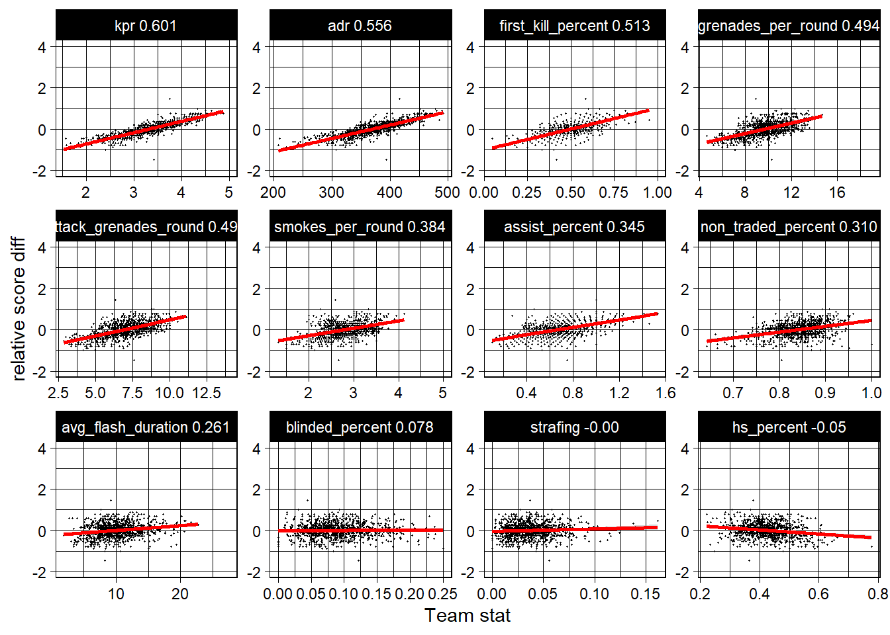

Chapter 5 Results
5.1 Evaluate the performance of teams and players with a new rating
We are going to see how commonly used indicators impacts the final score.
We generated standard indicators used by event organisors and sites from the datasets:
kpr : average number of kills per round
adr: average damage per round)
first_kill_ratio: ratio of the time where the team or player gets the first kill (which grants a numerical advantage)
smokes_per_round: average number of smokes thrown in a round
assist_ratio: ratio of kills assisted by another player than dealt more than 40 points of damage
non_traded_ratio: ratio of kills where the victim team could not get a revenge to prevent a numerical advantage
avg_flash_duration: average time of blinded enemy players caused by flash grenades
blinded_ratio: ratio of kills where the victim was blinded by a flash grenade
strafing: ratio of kills where the attacker was strafing i.e. was side stepping to avoid being immobile to the opposing player
hs_ratio: ratio of kills where the attackerclanded a shot in the enemy’s head, resulting in more damage points
 We can see that some indicators are more correlated than others to the relative score difference (difference of the winner’s and loser’s scores over the sum of the scores). For instance the kpr indicator has a correlation score of 0.6 with the relative score difference and thus can be used to evaluate a player’s performance. On the contrary, the strafing and hs_ratio indicators have little to do with a team’s success.
A PCA analysis better helps visualize indicators that better reflects a team’s chance of winning.

Indicators with directions opposite to the loosing matches and closer to the correlation circle are the most interesting ones. As we can see, the PCA analysis confirms the findings with the correlation tests.
Note that there is no indicator with a strong correlation (more than 0.7) with the score difference. But combining those indicators can still lead to a better overall rating score. We are going to achieve it with a multi-variable linear regression.
## (Intercept) kpr adr
## -2.159001804 1.098123208 -0.008680566
## first_kill_ratio grenades_per_round attack_grenades_round
## 0.556314728 0.129022010 -0.097033872
## smokes_per_round assist_ratio non_traded_ratio
## NA -0.013587043 0.908901056
## avg_flash_duration
## 0.0124873065.2 Teams performance
With a new combined rating, we can take a closer look at each team’s performance relative to each other

As expected the winner team is consistently in the top team ratings. However sometimes, some teams get even better ratings than the winner. This is explained by the fact that some teams have a solid performance throughout the tournament, only to get eliminated in the final stage. For example, in the Eleague Major 2017 event, Virtus.Pro was eliminated by Astralis in the finals, and Faze Clan got eliminated in the quarter-finals.
5.3 Players performance
Events and websites like HLTV generally focus on players’s performance on individual events. However it would be interesting to look at a player’s performance across all event. This would smooth out players that had unexpectedly good or bad performance in an event.
 The player Autimatic has the highest rating of all, and has one win with his team Cloud9 in the Boston Major. Interestingly, Zywoo, s1mple and device are the immediate 3 highest rated players after autimatic. The fact that those three players where nominated in the top 3 players in 2019 and 2020 by the HLTV website means that our combined rating reflects the different ratings of other sites such as HLTV.
The player Autimatic has the highest rating of all, and has one win with his team Cloud9 in the Boston Major. Interestingly, Zywoo, s1mple and device are the immediate 3 highest rated players after autimatic. The fact that those three players where nominated in the top 3 players in 2019 and 2020 by the HLTV website means that our combined rating reflects the different ratings of other sites such as HLTV.
It is often hard to compare teams and players across events because players often change teams. One way to cross the information is to visualize the teams of a player:
 One of the most successful teams is Astralis with 3 Major wins. A core of 3 players (dupreeh, device, and Xyp9x) have been playing together for 10 events explaining the team’s consistent success.
One of the most successful teams is Astralis with 3 Major wins. A core of 3 players (dupreeh, device, and Xyp9x) have been playing together for 10 events explaining the team’s consistent success.
5.4 Use in-game data to have the competitive advantage
The game data of matches is available to everyone and pro teams always watch their opponent’s previous games to come up with strategies.
However, watching games takes time. Some parts of this process can be automated.
Even though it does not give informations such as teams reactions to specific events, 2d-density maps can give the general trends, and habits of a player of a team.
For instance, one of the hardest player to play against is s1mple, especially with the AWP weapon because of its range. Parsing the game data allows to know where players can expect s1mple to be and where he can be aiming at with his weapon.

Knowing the habits of a player and the positions where it is dangerous to be can avoid being surprised by the enemy and helps to come up with strategies to counter the enemy team.
5.5 Game evolution and balance
People often attribute the success and longevity of the CSGO game to its balance, meaning that both teams have an equal chance of winning. However, this is difficult to achieve as it depends on multiple factors such as the weapon characteristics and map layout.
Because the developpers have been continuously updating the maps and weapon characterstics, the probablity to win a round on the T/CT sides has changed over the years.

The drop in the win percentage differences after 2016 can be attributed to the update of the nuke, inferno and overpass maps. Maps updates often include changes in the layout to give more advantage to a given side.
 Nuke as been removed from the official maps after Katowice 2015 and reintroduced for Cologne 2016. It was known to greatly favor the CT side, often forcing the team starting on the T side to have an impressive comeback after switching sides on the half time.
But after the nuke map update the balance greatly improved.
Nuke as been removed from the official maps after Katowice 2015 and reintroduced for Cologne 2016. It was known to greatly favor the CT side, often forcing the team starting on the T side to have an impressive comeback after switching sides on the half time.
But after the nuke map update the balance greatly improved.
Note that the map pool changes for every event. The latest map being introduced is vertigo. Because it is a new map, it is not as balanced as the other ones.
Weapons also impact the game balance.

When the developers change a weapon’s characteristic such as damage output, it can lead to a drop or spike in popularity.
For example, in 2017 developers tried to increase the usage of smg type weapons by increasing their damage output. As a result, the ump was often used by teams when they could not get a rifle. But complains from pro players meant that the update was reverted.
The same can be said for the cz-75 in 2018. Also, the p250, five-seven and tec-9 had their damage and accuracy decreased over the years and resulted in a drop in usages by the pro players.
Finally, it happens that players discover that a weapon can be very effective, even without its characteristics being changed. This is what happened in 2019 when players started to use the AUG and the SG 553 weapons for their good accuracy at long range.